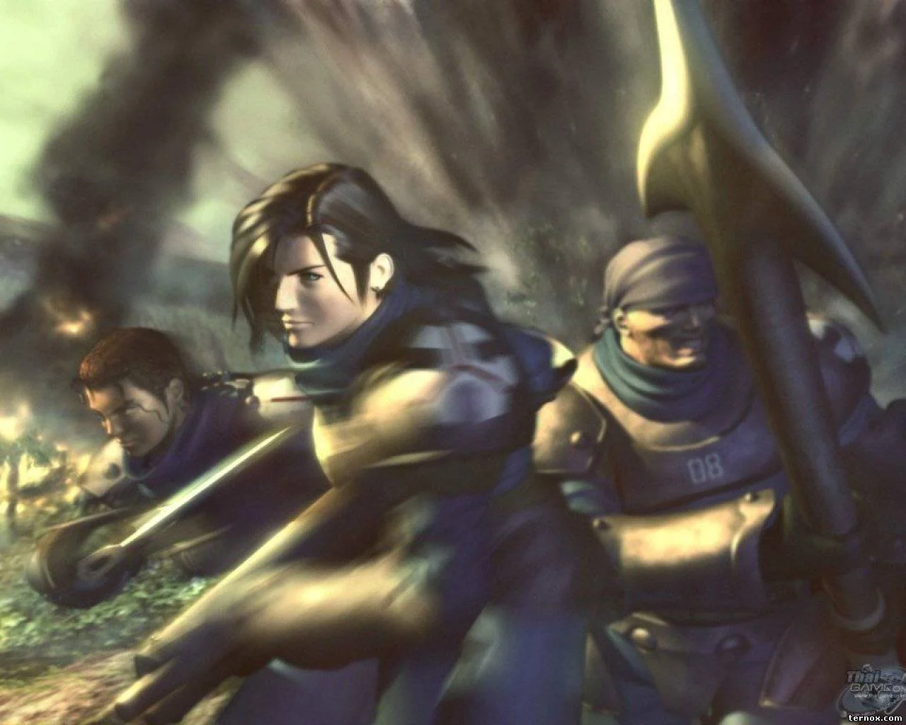
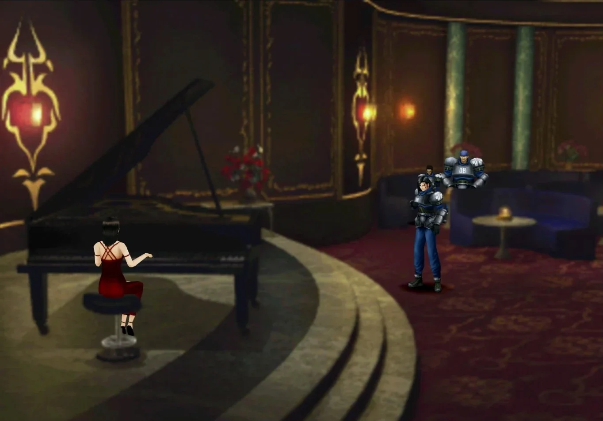
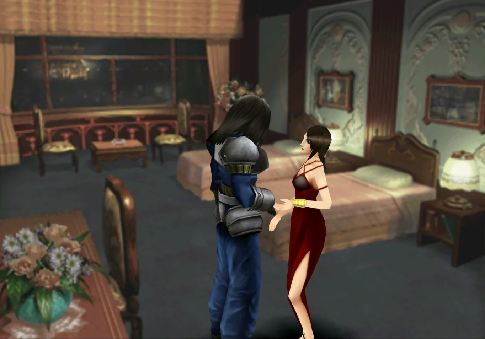

Laguna (1er Sueño)
En medio de Un viaje en tren, nos encontraremos manejando a otros personajes, por algún motivo desconocido. Tendrás que avanzar por el bosque, eliminando a los enemigos que te encuentres, hasta subirte a un coche. Una vez se detenga el vehículo, avanza hacia la parte inferior derecha de la pantalla para cambiar de calle, y sigue recto. Entra en el "Galbadia Hotel" y baja las escaleras de la derecha para llegar al salón.
Habla con la camarera y selecciona "Sí, por favor" para que de comienzo la secuencia del piano. Cuando recuperes el control de Laguna acércate al piano. Después de hacer el ridículo, vuelve con Kiros y Ward al sofá. Espera a que comience la siguiente secuencia, hasta que no acabe la canción, no avanzarás. Después de hacer el ridículo por segunda vez, sube las escaleras hasta la entrada del hotel y habla con el recepcionista para preguntar por la habitación de Julia.
Una vez hayas hecho el ridículo por tercera vez (la escena puede cambiar en algunos puntos), todo volverá a la normalidad. Es hora de conocer a Los Búhos del Bosque en Timber
SIGUIENTE:
TIMBERANTERIOR:
HACIA TIMBER